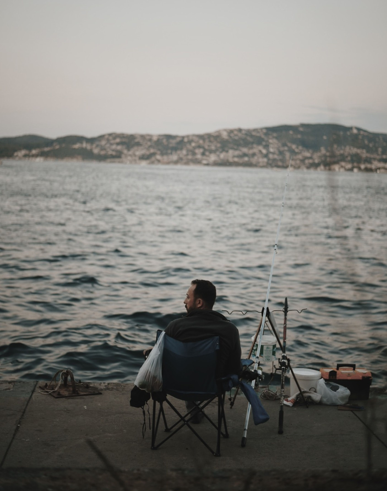

Common Misconceptions about fishing
There are several common misconceptions about fishing, such as that it is boring, but I would like to disprove that. fishing can actually be a blast with non-stop action. and I know this from personal experience and due to this I just ask that you give fishing a try and if you don't like it I understand but who knows you might find out that you have a passion for it if you simply give it a try
